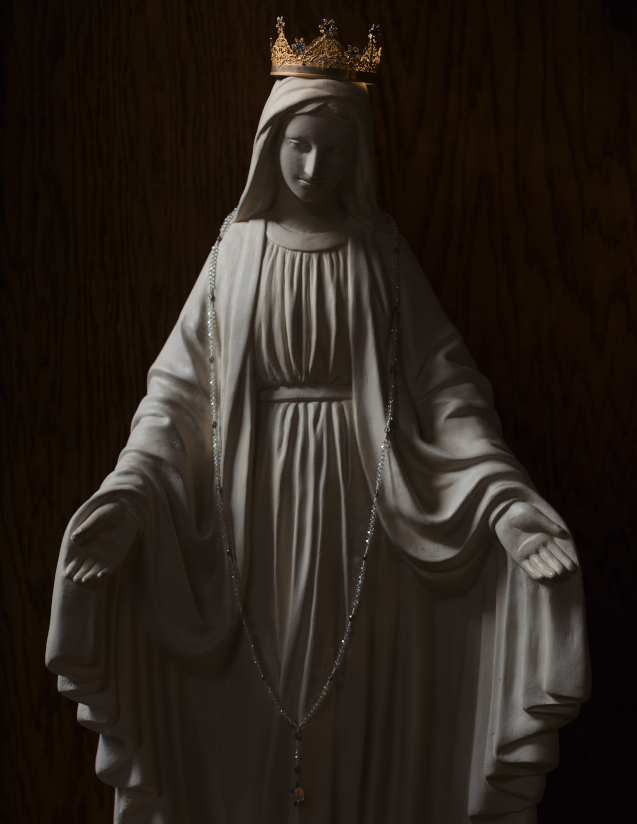

Sub Tuum Præsidium confugimus, Sancta Dei Genetrix
Oração para pedir proteção a Virgem Maria, Nossa Senhora.
Pode ser feito no final do Santíssimo Rosário, depois do Salve Rainha.
Clique aqui para fazer o download da oração em pdf.
Oração em latim
Sub tuum præsidium confugimus, Sancta Dei Genetrix;
nostras deprecationes ne despicias in necessitatibus nostris,
sed a periculis cunctis libera nos semper,
Virgo gloriosa et benedicta.
Amen.
Oração em português brasileiro
À vossa proteção recorremos, Santa Mãe de Deus;
não desprezeis as nossas súplicas em nossas necessidades;
mas livrai-nos sempre de todos os perigos,
ó Virgem gloriosa e bendita.
Amém.
Ave Maris Stella
Nossa Senhora do Perpétuo Socorro
Essa oração pode ser feita antes do Santíssimo Rosário.
Clique aqui para fazer o download da oração em pdf.
Oração em latim
Ave maris stella, Dei Mater alma, Atque semper Virgo, Felix cæli porta.
Sumens illud Ave Gabrielis ore, Funda nos in pace, Mutans Hevæ nomen.
Solve vincla reis, Profer lumen cæcis, Mala mostra pelle, Bona cuncta posce.
Monstra te esse matrem, Sumat per te preces, Qui pro nobis natus Tulit esse tuus.
Virgo singularis, Inter omnes mitis, Nos, culpis solutos, Mites fac et castos.
Vitam præsta puram Iter para tutum, Ut, videntes Jesum, Semper collætemur.
Sit laus Deo Patri, Summo Christo decus, Spiritui Sancto, Tribus honor unus.
Amen.
Oração em português brasileiro
Ave, estrela do mar, Fecunda Mãe de Deus, Que permanecestes Virgem, Ó doce porta dos Céus.
Vós, que ouvistes aquele Ave Da boca de Gabriel, Estabelecei-nos na paz, Mudando o nome de Eva.
Libertai dos grilhões os pecadores, Mandai luz aos cegos, Afastai de nós todos os males E obtende-nos todos os bens.
Mostrai que sois nossa mãe: Por Vós ouça as nossas preces Aquele que, para nos salvar, Quis ser Vosso Filho.
Ó Virgem sem igual, A mais doce de todas, Libertando-nos das nossas culpas, Fazei-nos mansos e puros.
Concedei-nos uma vida pura, Fazei seguros os nossos caminhos: Para que, na posse de Jesus, Exultemos eternamente.
Seja louvado e glorificado Deus Padre, Filho e Espírito Santo; Às três Pessoas divinas Seja prestada honra igual.
Amém.
Santa Maria, Mãe de Deus e de todos os cristãos

Nossa Senhora Rainha dos Céus
Como, na ordem natural, um filho precisa de um pai e de uma mãe, assim também na ordem da graça é preciso que um verdadeiro filho da Igreja tenha Deus por Pai e Maria por Mãe; e se ele se gloria por ter Deus como Pai, mas não tem nenhuma ternura filial por Maria, trata-se de um enganador, cujo pai não é outro senão o demônio...
- São Luís Maria Grignion De Montfort, O Segredo De Maria: Sobre a Escravidão Da Santa Virgem, Capítulo 1, 11.
Oração a Jesus
[66] Meu amável Jesus, permite-me dirigir a vós para testemunhar o reconhecimento de onde me encontro pela graça que me concedeste ao dar-me vossa Santa Mãe por meio da devoção da escravidão, para ser minha advogada junto a Vossa Majestade, e o suplemento universal em minha tão grande miséria. Ai de mim, Senhor! Sou tão miserável que, sem esta boa Mãe, eu estaria infalivelmente perdido. Sim. Maria é-me necessária junto a Vós, em toda parte: necessária para acalma-vos em vossa justa cólera, pois tanto vos ofendi a cada dia; necessária para deter os castigos eternos de vossa justiça que eu mereço; necessária para eu olhar para Vós, para vos falar, para vos rogar, para aproximar-me de vós e vos agradar; necessária para salvar minha alma e a dos outros; necessária, em uma palavra, para fazer sempre vossa santa vontade e buscar em tudo a vossa maior glória.
Nossa Senhora e o Menino Jesus
Ah, que eu possa publicar por todo o universo a misericórdia que tiveste para comigo! Que o mundo todo saiba que, sem Maria, eu já estaria condenado! Que eu possa render dignas ações de graça por tão grande benefício! Maria está em mim, haec facta est mihi. Ó, que tesouro! Ó, que consolação! Como não ser, por isso mesmo, inteiramente dela! Ó, que ingratidão [seria], meu querido Salvador! Prefiro antes morrer a incorrer em tal desgraça, pois prefiro a morte a viver sem pertencer inteiramente a Maria.
Eu a tomei milhares de vezes como todo bem para mim, com São João Evangelista aos pés da cruz, e tantas vezes igualmente dei-me a ela; mas, se ainda não o fiz suficientemente bem, segundo vossos desejos, querido Jesus, faço-o agora como quiserdes que eu faça; e se virdes em minha alma e em meu corpo alguma coisa que não pertença a essa augusta Princesa, peço-vos que a arranqueis e a lanceis longe de mim, pois não sendo de Maria, é indigna de vós.
[67] Ó Santo Espírito! Concedei-me todas essas graças e plantai, regai e cultivai em minha alma a amável Maria, que é a Árvore da vida verdadeira, para que cresça, floresça e dê frutos de vida em abundância. Ó Santo Espírito! Dai-me uma grande devoção e uma forte inclinação a vossa divina Esposa, um grande consolo em seu seio maternal e um constante recurso à sua misericórdia, para que nela formeis em mim Jesus Cristo natural, grande e poderoso, até a plenitude de sua idade perfeita. Amem.
- O Segredo De Maria, Suplementos - Orações a Jesus e a Maria, 66-67